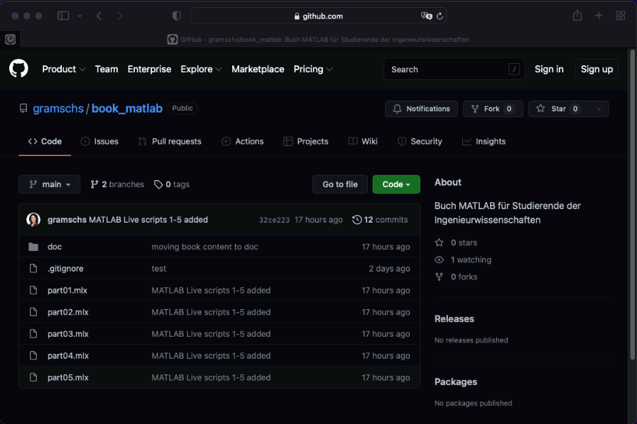

Willkommen zum Lernkurs MATLAB für Studierende der Ingenieurwissenschaften
Contents
Willkommen zum Lernkurs MATLAB für Studierende der Ingenieurwissenschaften¶
Verfasst von Simone Gramsch // Powered by Jupyter Book
Die Digitalisierung in den Ingenieurwissenschaften nimmt immer stärker zu. Daher bietet dieser MATLAB-Kurs zukünftigen Ingenieur:innen einen Einstieg in die grundlegenden Programmiertechniken mit MATLAB. Jedes Kapitel entspricht dabei einer Vorlesung von 90 min Dauer.
Note
Programmieren lernt man nur durch Programmieren!
Starten Sie parallel zum Durcharbeiten der Kursmaterialien MATLAB. Gerne können Sie sich jedes Kapitel dieses Kurses als interaktives MATLAB Live Skript herunterladen. Sie finden die MATLAB Live Skripte unter
https://github.com/gramschs/book_matlab
Klicken Sie auf den grünen Button mit der Beschriftung Code und dann auf Downlaod as ZIP. Das ZIP-Archiv enthält – neben den Buchquellen – die Original MATLAB Live Skripte erkennbar an der Dateiendung *.mlx.

Der Inhalt des interaktiven MATLAB Live Skripts ist mit dieser Buchansicht identisch, bietet Ihnen aber die Möglichkeit, Code zu verändern und direkt das Gelernte auszuprobieren. Daher sind auch in jedem Kapitel kleine Mini-Übungen von ca. 5 min Dauer integriert, die den dort behandelten Stoff aufgreifen. Nehmen Sie sich die Zeit, sofort die Mini-Übungen zu probieren, bevor Sie weiterlesen! Musterlösungen zu diesen Mini-Übungen befinden sich jeweils am Ende jedes Kapitels.